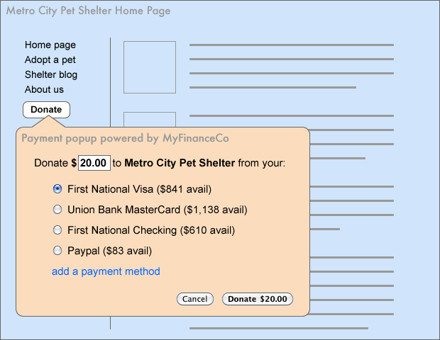

Shopping Cart Scenario
The user has previously installed a financial management web app, 'MyFinanceCo'. In addition to consolidating transactions and tracking finances, MyFinanceCo also provides a payment service to the browser.
The user is a first-time shopper at Bay Bookstore and, when she comes to the shopping cart, Bay Bookstore's site checks and sees that she has a payment service set up. When she clicks on 'Checkout' the user is presented with the accounts she uses in MyFinanceCo, along with available balances for each:

The user can make an informed choice of payment method and, when she selects 'First National Visa' and clicks 'Pay $45.91', MyFinanceCo securely transmits that card's financial information and billing address to Bay Bookstore, completing the payment portion of the transaction with three clicks.
Even in this basic case there are a few important things to point out:
- At no point in the process does the Bay Bookstore site get to see what financial accounts the user has, or even what financial service (in this case, MyFinanceCo) is being used to aid the transaction. Bay Bookstore is only checking if a payment service exists and, if it does, the Bay Bookstore waits for the card information to be sent from the user's browser after they've selected the card they want to use and click 'Pay'.
- This service could also be implemented directly by a bank, which could allow for more robust features such as single-use credit card numbers, pre-authroized by the bank for the specific transaction amount and no more.
Donation Scenario
Metro City Pet Shelter is a non-profit organization that relies on community donations for its ongoing operations. For most small non-profits, setting up and maintaining a mechanism to handle online donations is either cumbersome or relies on sending the user to a third-party payment site. Donations fall off quickly as the transaction becomes more complex or cumbersome, so having an easy way for the shelter to accept payments is often vital for an organization's survival.

Rather than send potential donors off-site or requiring them to use a specific payment service, the non-profit can call on the payment service to let the visitor make a donation of the amount they choose, from the account they choose, in a matter of seconds, without having to register or sign in to a third-party service, or fill out a complex web form.
A receipt for the transaction can also be routed back through to the payment service to MyFinanceCo for easier record-keeping.